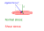
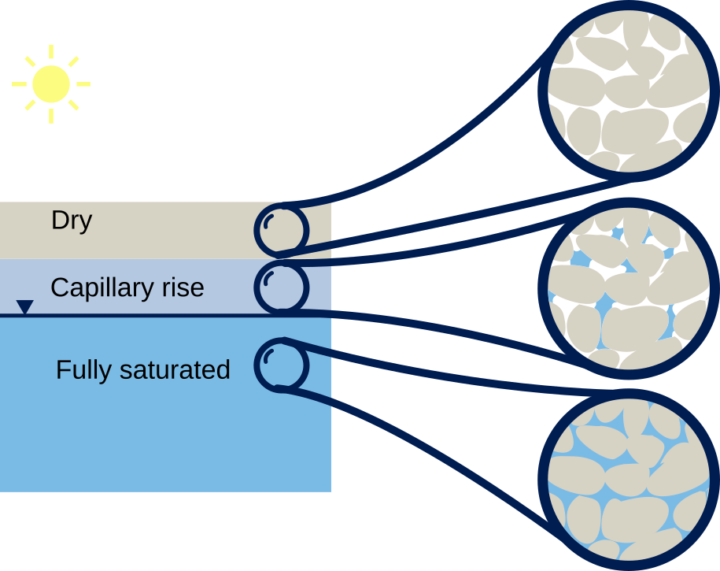
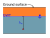
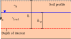
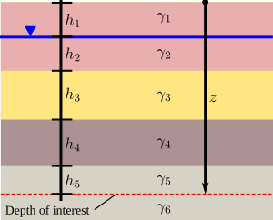
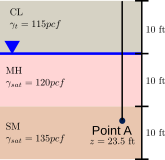
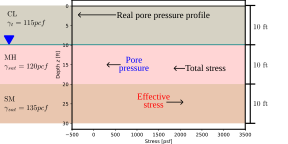
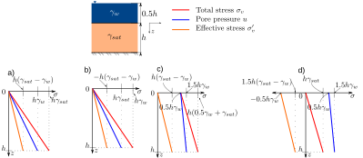
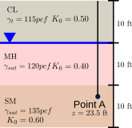
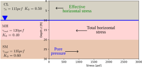

Recap
- We learned about the importance and the steps of site investigation
- We learned about the strengths and limitations of SPT and CPT
-
We learned how SPT and CPT can be used to determine soil properties
- We learned how in-situ tests and geophysics can be used to draw a geotechnical soil profile
Contents
- Hydrostatic pore pressure
- Interparticle effective stress.
- Effective stress principle
- At-rest horizontal stresses
Objective covered in this lecture
- [O2]: Develop an understanding of the importance of groundwater and seepage and its role in evaluating the effective stress in soils
After this lecture we will able to:
- Calculate the hydrostatic pore pressure.
- Calculate geostatic vertical total and effective stresses.
- Calculate geostatic horizontal total and effective stresses.

Water in hydrostatic conditions


The hydrostatic pore water pressure is then calculated as:
Where:
\(h_w\) is the depth below the GWT
Principle of effective stress

This called the
- \(\sigma'\) is called the and is the stress that is transmitted through the
- \(\sigma\) is the applied to the soil element and is the sum of the intergranular stress and the pore water pressure.
In-situ total vertical stresses
We can calculate this total weight by adding all weights above the depth of interest:
\( \begin{align}
\sigma_v= \int_{z=0}^{z=h} \gamma(z) dz
\end{align} \)


The total vertical stress at depth \(z\) is:
\(n=\) number of interfaces below the ground surface including the water table.
Example 4.1
Compute the total and effective vertical stresses at point A. Plot the vertical total and effective stresses with the pore pressure profile in the same graph.

| Depth (ft) | Unit Weight (pcf) | Water height (ft) | Total Vertical Stress (psf) | Pore Pressure (psf) | Effective Vertical Stress (psf) |
|---|---|---|---|---|---|
| 0 | 115 | 0 | |||
| 10 | 115 | 0 | |||
| 20 | 120 | 10 | |||
| 30 | 135 | 20 |

Participation question 4.4

Horizontal stresses
Example 4.2
Compute the total and effective horizontal stress at point A. Plot the horizontal total and effective stresses with the pore pressure profile in the same graph.

| Layer | Depth (ft) | Unit Weight (pcf) | \(K_o\) | Water depth (ft) | Total vertical Stress (psf) | Pore Pressure (psf) | Effective vertical Stress (psf) | Horizontal Effective Stress (psf) | Total horizontal Stress (psf) |
|---|---|---|---|---|---|---|---|---|---|
| CL | 0 | 115 | 0.5 | 0 | |||||
| CL | 10\(^-\) | 115 | 0.5 | 0 | |||||
| MH | 10\(^+\) | 120 | 0.4 | 0 | |||||
| MH | 20\(^-\) | 120 | 0.4 | 10 | |||||
| SM | 20\(^+\) | 135 | 0.6 | 10 | |||||
| SM | 30 | 135 | 0.6 | 20 |

Example 4.3
Participation question 4.2
- It is similar to loading the soil
- It is similar to unloading the soil
- It doesn't affect the soil